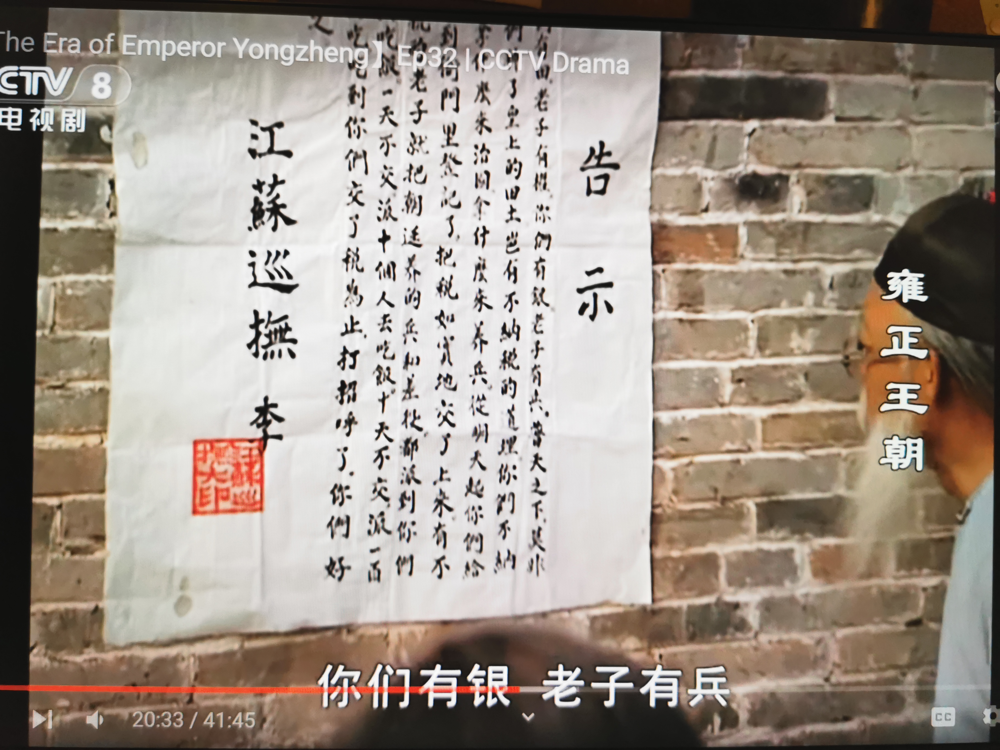
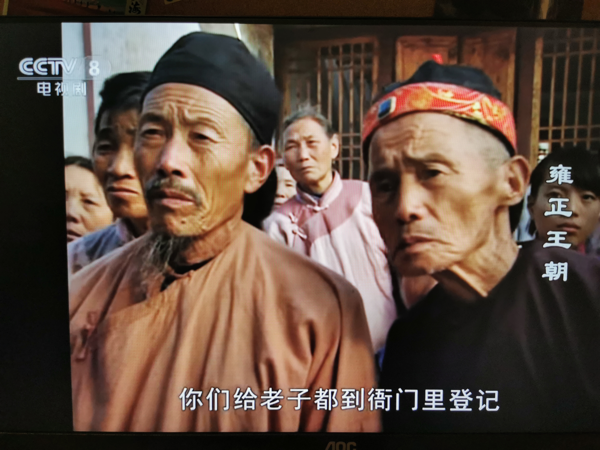
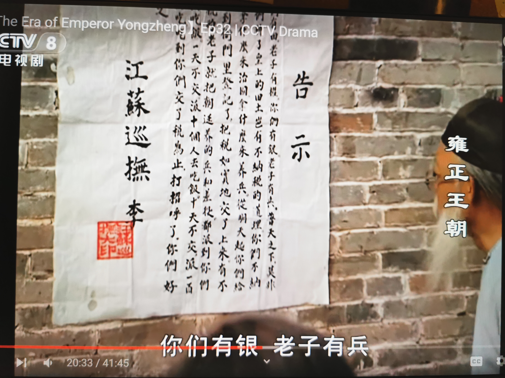
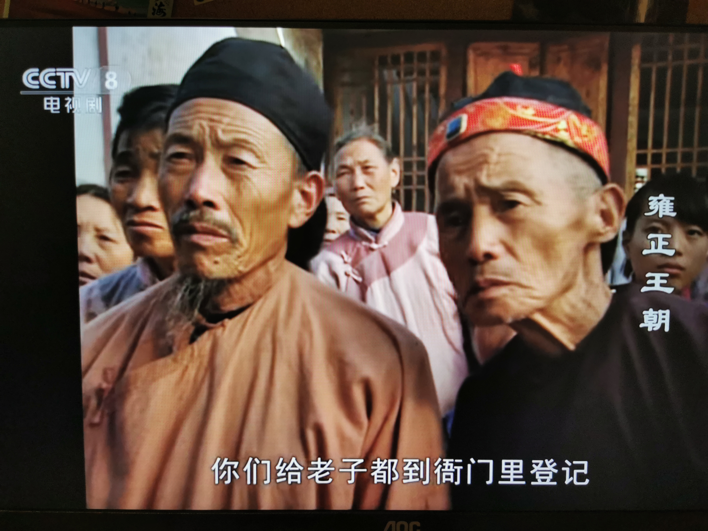
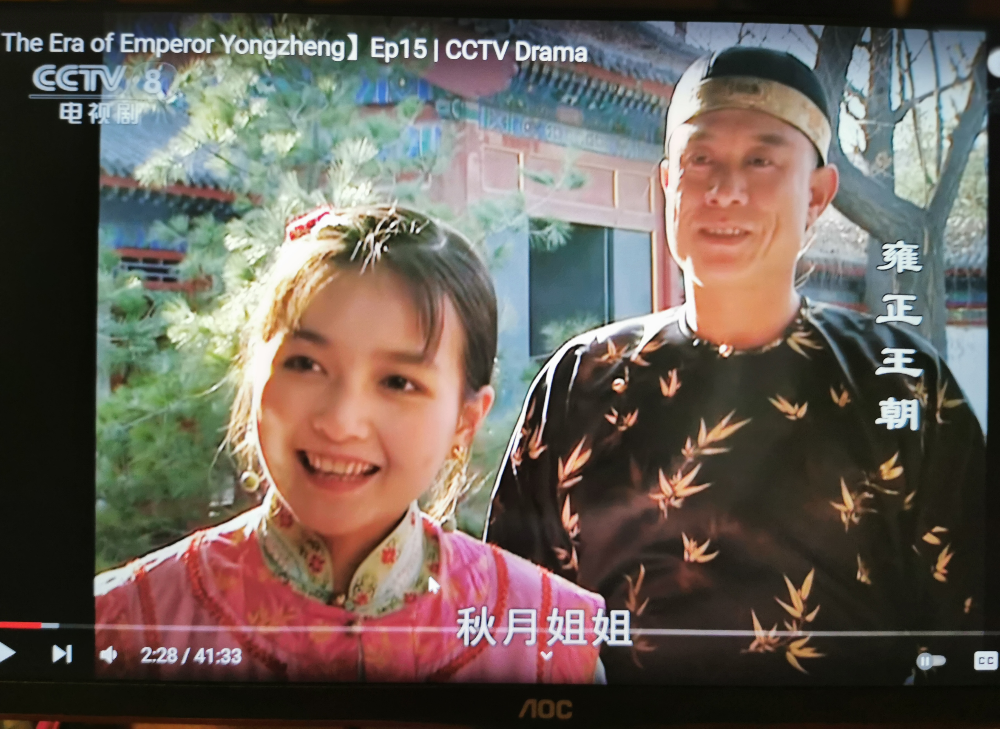

在疫情笼罩和纷飞的冰雪下，远在他乡的诗意渐渐失去了往日的明媚和笑容。好在临近下学期开学，有一些事情也逐渐能理出一个头绪来，也沉淀下来一些思考。
这几个月，我不知道找了多少人聊天。我发现，最后的最后，没有人的生活是那么“理所当然”得顺利的，然而深陷信息茧房的我们是很难意识到的。我们总在网上看到谁谁谁又取得什么什么成就，可真正跟身边的人聊一聊，跟幼时的同伴聊一聊，才发现，“不如意之事十之八九”，我们看起来的顺顺利利实的背后是无数次挫折和灰心。极有可能，这些经历才塑造了一个个当下的我们。聊天途中我试图找到一个“标准”或“大众”的生活攻略，可到最后，我觉得这个“理所当然”不存在，人各有志。
说来说去，我认为我的生活中，少了潇洒，少了那种少年人应有的蓬勃朝气。我的性格里，也隐约缺少一些无缘无故的自信和闪烁。这部分精神底色，不是流水的美食和程式化的生活能带来的，是只有人文、哲学、传记才能给予我的。
在前几晚，我无意中刷到豆瓣9分多的雍正王朝。这部20多年前的电视剧当初播出的时候，收视率达17.6%，一度是万人空巷的水准。它的编剧刘和平曾创作过曲高和寡的大明王朝1566，一样是看过引发人深思的剧。半小时前，我刚把雍正王朝紧赶慢赶的看完，算是一刷 ，已经得到许多珍贵的启示。
这个档次的剧，看完是一定会自上而下引发观众对于社会思考的，而这种程度的思考可以明亮人的见识。剧中的人物可以说没有绝对的好坏，只有立场。从前很多剧里，我们看到的都是弄权和审时度势的服从，在我身上何尝不是！我将其理解成一种“驯化”，不置可否。雍正王朝里近乎所有的人都性格鲜明，四爷党上台是为了整顿吏治处理积弊，八爷党想上台是为了保护士绅阶层读书人的利益，从心底不甘心屈居人下。清流阶层遇到看不过眼的事情会不计代价的参奏；孙嘉诚一心为民揭露铸钱比例背后的黑色利益；田文镜雷厉风行推行改革；李卫虽然读书不多但却是办事的一把好手，思路清晰且深入民众；
 




明媚的翠儿重情义心肠好，每次想到自己的恩人都会十分感怀挂念，听到十三爷病重伤心了好几个月；
还有绝世好朋友十三爷，说出“人待人是无价之宝”这样感人至深的话；

演员们的一颦一笑都极富感染力的，尤其是40集高潮，八爷逼宫和雍正的对望，眼神流转无意中透露着一丝漠视、迟钝，和幽默。


八爷逼宫前的剧情，每一集时时刻刻都是针锋相对、干劲充足的对话和较量，配乐也全面烘托气氛的紧张和局势的大起大落。不同于不痛不痒的剧，这样的剧看完带来的就不仅是一时的轻放松，而是在人情世故，人生价值，社会问题等全方位的认识升华。最重要也是我一刷吸取到最宝贵的品质，就是骨气！通过前面《沉默的勇气》的江阳江检察官和朱伟朱刑警，我大概理解了什么是光芒万丈。不是拥有多少钱权，不是考到什么名校，而是将精神世界的坚守贯穿到现实生活，是知行合一，是有骨气，有底气，有自己的坚持。在《雍正王朝》，同样，有那么一群人就是不为五斗米折腰，就是坚守自己所珍视的东西，这份坚持在我看来可贵至极。
最后，大赞王绘春老师演的温文儒雅，不疾不徐的八爷。一直到最后都没低头，在逼宫事败后说出最有张力的台词：